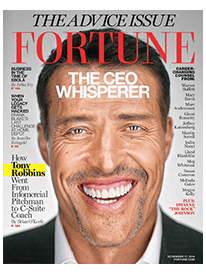

Tony Robbins è un imprenditore, autore di bestseller n. 1 del New York Times, filantropo e stratega di vita e di business n. 1 della nazione. Ha dato potere a più di 50 milioni di persone provenienti da 100 paesi in tutto il mondo attraverso i suoi programmi audio, video educativi e seminari dal vivo. Per più di quattro decenni e mezzo, milioni di persone hanno goduto del calore, dell’umorismo e del potere di trasformazione degli eventi aziendali e di sviluppo personale di Tony.

Ha lavorato con quattro presidenti degli Stati Uniti, grandi artisti dello spettacolo – dagli Aerosmith ai Green Day, Usher e Pitbull, e atleti e squadre sportive tra cui la grande tennista Serena Williams, il campione UFC Conor McGregor e i Golden State Warriors della NBA. I leader aziendali e i magnati della finanza, dal fondatore di Salesforce.com Marc Benioff a Ray Dalio di Bridgewater Associates, lo hanno scelto per il coaching personale.